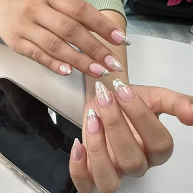
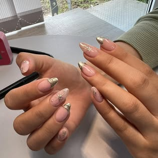
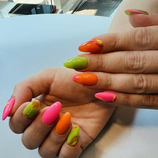
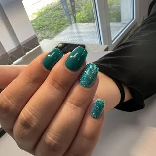
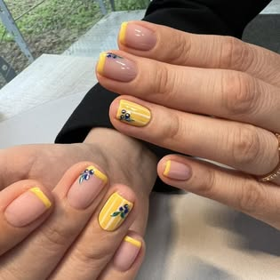
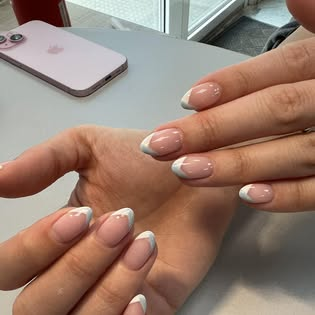
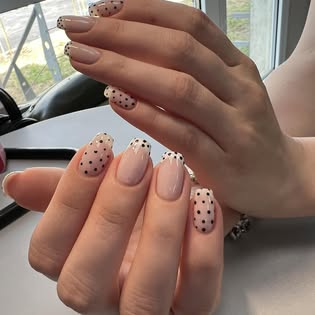
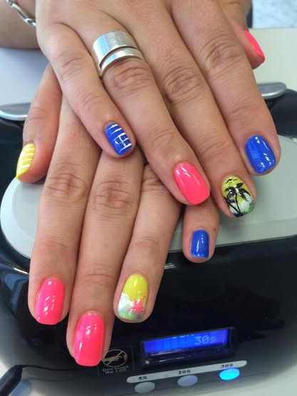

Фризьорство
Подстригване, оформяне и личен подход към клиента.
Салон за красота · Дружба 2
Малък квартален салон с лично отношение, фризьорски услуги и козметика — близо до хората в ж.к. Дружба 2.
Услуги
Публичните отзиви споменават фризьорски услуги и козметика, включително кола маска. Facebook страницата показва и реални nail резултати — затова сайтът води с визуално доказателство, а не с празни обещания.
Подстригване, оформяне и личен подход към клиента.
Реални Facebook снимки показват цветни, неутрални и декоративни завършеци.
Козметична грижа, включително услуга, спомената директно от клиентски Google отзив.
За хора от района, които искат познато място и лесна връзка.
Facebook резултати
Подбрани са най-подходящите публични снимки от Facebook страницата — ясни, различни и достатъчно чисти за сайт. Лога, продуктови графики и stock-looking изображения са отхвърлени.








Реални Google отзиви
„Отлични професионалисти, готови да направят най-доброто за своите клиенти. Имам пълно доверие за резултатите от услугата, за която съм посетила салона.“
„Изключително съм доволен от фризьорката Надя, за първи път посещавам салонът и мога да кажа, че и за напред ще бъда техен клиент.“
„Козметичката е много мила и приятна дама, страхотен събеседник и свежарка.“
Най-сигурният начин е директно обаждане към салона.
Контакти
Адрес: ж.к. Дружба 2, ул. „Дружба“ 210А, 1582 София
Телефон: 087 831 5893
Facebook: Студио Фреш
Отвори навигация в Google Maps